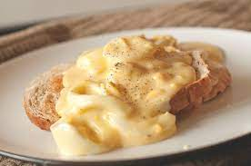

Creamed Eggs on Toast

Description
This wonderful recipe was borrowed from website allrecipes and it's ingredients list is made for 6 servings.
This recipe is ideal for a great breakfast. If for some reason you have found yourself with a couple eggs to spare, please enjoy!
Ingredients
- 12 hard-cooked eggs, peeled
- ¼ cup butter
- ½ cup all-purpose flour
- 3 cups milk
- 1 tablespoon chicken bouillon granules
- 6 slices white bread, lightly toasted
- salt and white pepper to taste
Steps
- Separate the egg whites from the egg yolks. Place the egg yolks into a bowl and mash with a fork. Chop the egg whites into small pieces and set aside.
- Melt the butter in a saucepan set over medium heat. Stir in flour until smooth. Gradually mix in the milk and chicken bouillon so that no lumps form and stir constantly until the mixture comes to a boil.
- Add the egg yolks and mix until dissolved. Stir in egg whites. Serve over toast and season with salt and white pepper.